Why a fresh transformation, not vibes-transformation. The legacy vibes-transformation module (not in the root pom) is an I/O / format-conversion layer for the obsolete be.unamur.transitionsystem.* namespace; it does not contain anything for pair-graph / k-tuple coverage transformation. We re-implement directly against the current be.vibes.ts.* types.
Reduction: pair-coverage on FTS F ≡ edge-coverage on the pair graph P(F). A Hierholzer cycle on P(F) covers every original pair.
FExpressionPreservingProjection.project.InitialSccFilter.keepInitialScc.PairGraphTransformer.transform — nodes = original transitions plus INIT; edges = INIT→p(t) for initial-state outgoings and p(t1)→p(t2) for every contiguous pair.EulerianBalancer.balanceWithoutPrecheck — supplies the missing INIT-incoming as synthetic __balance__N edges.p(t1)→p(t2) translates to executing t2 in the original FTS. The first edge of each non-INIT segment gets t_Y prepended to preserve the otherwise-split pair.Coverage claim: Hierholzer visits every pair-graph edge exactly once → every contiguous original transition pair is covered, by construction.
Three FTS images per product: (a) the repaired original FTS — source of the pair info; (b) the pair graph BEFORE balancing — INIT source-only and the graph is not Eulerian; (c) the pair graph AFTER balancing — synthetic __balance__N edges to INIT shown dashed-red. Generated test cases are listed underneath.
Selected features: selected = {c, f, t}
Repaired FTS: 5 states, 6 transitions (6 real / 0 __end__).
Pair graph (raw): 7 nodes (incl. INIT), 8 edges.
Pair graph (balanced): 7 nodes, 9 edges (1 synthetic __balance__N added).

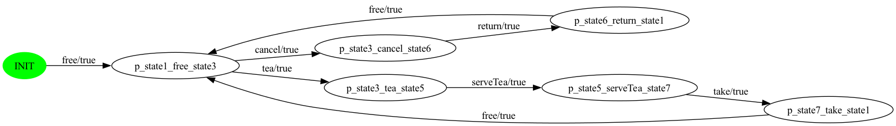
Generated test suite — 1 test case(s) total (8 real step(s); pair-graph cycle has 9 edge(s) total, 1 synthetic dropped at translation).
free → tea → serveTea → takefree → cancel → returnfreeSelected features: selected = {s, t}
Repaired FTS: 8 states, 9 transitions (9 real / 0 __end__).
Pair graph (raw): 10 nodes (incl. INIT), 11 edges.
Pair graph (balanced): 10 nodes, 13 edges (2 synthetic __balance__N added).
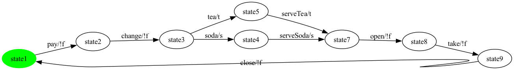
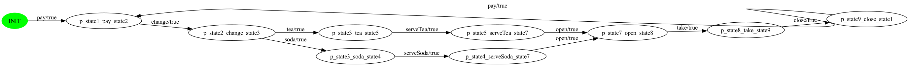
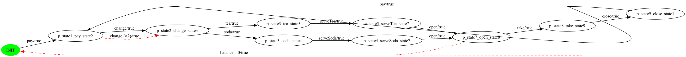
Generated test suite — 2 test case(s) total (12 real step(s); pair-graph cycle has 13 edge(s) total, 2 synthetic dropped at translation).
pay → change → tea → serveTea → open → take → closepaychange → soda → serveSoda → openSelected features: selected = {s}
Repaired FTS: 7 states, 7 transitions (7 real / 0 __end__).
Pair graph (raw): 8 nodes (incl. INIT), 8 edges.
Pair graph (balanced): 8 nodes, 9 edges (1 synthetic __balance__N added).

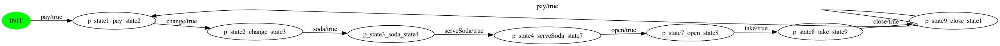
Generated test suite — 1 test case(s) total (8 real step(s); pair-graph cycle has 9 edge(s) total, 1 synthetic dropped at translation).
pay → change → soda → serveSoda → open → take → closepaySelected features: selected = {t}
Repaired FTS: 7 states, 7 transitions (7 real / 0 __end__).
Pair graph (raw): 8 nodes (incl. INIT), 8 edges.
Pair graph (balanced): 8 nodes, 9 edges (1 synthetic __balance__N added).
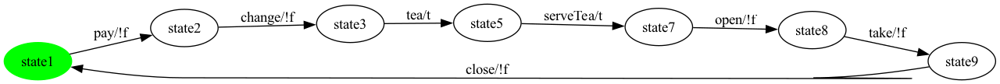
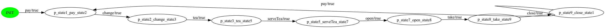
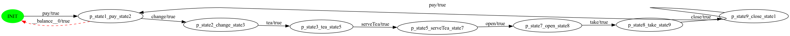
Generated test suite — 1 test case(s) total (8 real step(s); pair-graph cycle has 9 edge(s) total, 1 synthetic dropped at translation).
pay → change → tea → serveTea → open → take → closepaySelected features: selected = {f, s, t}
Repaired FTS: 5 states, 6 transitions (6 real / 0 __end__).
Pair graph (raw): 7 nodes (incl. INIT), 8 edges.
Pair graph (balanced): 7 nodes, 9 edges (1 synthetic __balance__N added).
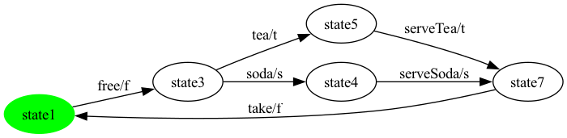
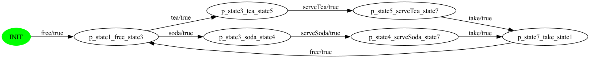
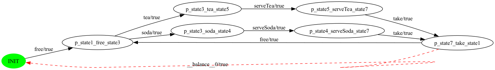
Generated test suite — 1 test case(s) total (8 real step(s); pair-graph cycle has 9 edge(s) total, 1 synthetic dropped at translation).
free → tea → serveTea → takefree → soda → serveSoda → takeSelected features: selected = {c, f, s}
Repaired FTS: 5 states, 6 transitions (6 real / 0 __end__).
Pair graph (raw): 7 nodes (incl. INIT), 8 edges.
Pair graph (balanced): 7 nodes, 9 edges (1 synthetic __balance__N added).

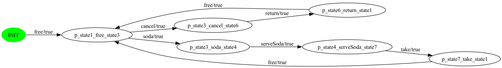
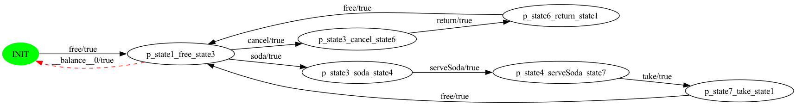
Generated test suite — 1 test case(s) total (8 real step(s); pair-graph cycle has 9 edge(s) total, 1 synthetic dropped at translation).
free → cancel → returnfree → soda → serveSoda → takefreeSelected features: selected = {c, s}
Repaired FTS: 8 states, 9 transitions (9 real / 0 __end__).
Pair graph (raw): 10 nodes (incl. INIT), 11 edges.
Pair graph (balanced): 10 nodes, 13 edges (2 synthetic __balance__N added).

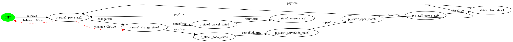
Generated test suite — 2 test case(s) total (12 real step(s); pair-graph cycle has 13 edge(s) total, 2 synthetic dropped at translation).
pay → change → soda → serveSoda → open → take → closepaychange → cancel → returnpaySelected features: selected = {f, t}
Repaired FTS: 4 states, 4 transitions (4 real / 0 __end__).
Pair graph (raw): 5 nodes (incl. INIT), 5 edges.
Pair graph (balanced): 5 nodes, 6 edges (1 synthetic __balance__N added).
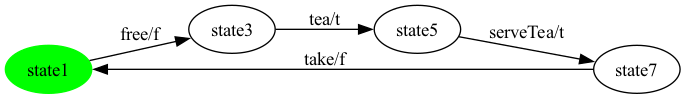
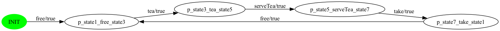
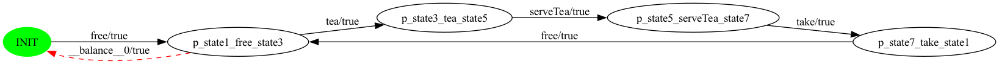
Generated test suite — 1 test case(s) total (5 real step(s); pair-graph cycle has 6 edge(s) total, 1 synthetic dropped at translation).
free → tea → serveTea → takefreeSelected features: selected = {c, f, s, t}
Repaired FTS: 6 states, 8 transitions (8 real / 0 __end__).
Pair graph (raw): 9 nodes (incl. INIT), 11 edges.
Pair graph (balanced): 9 nodes, 12 edges (1 synthetic __balance__N added).

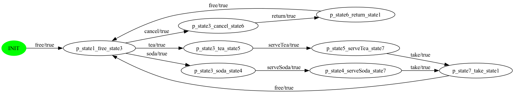
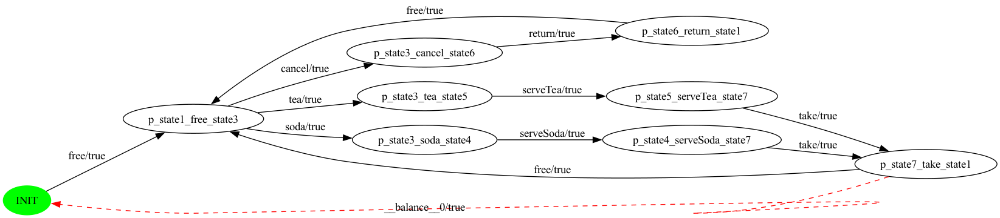
Generated test suite — 1 test case(s) total (11 real step(s); pair-graph cycle has 12 edge(s) total, 1 synthetic dropped at translation).
free → tea → serveTea → takefree → cancel → returnfree → soda → serveSoda → takeSelected features: selected = {c, s, t}
Repaired FTS: 9 states, 11 transitions (11 real / 0 __end__).
Pair graph (raw): 12 nodes (incl. INIT), 14 edges.
Pair graph (balanced): 12 nodes, 17 edges (3 synthetic __balance__N added).
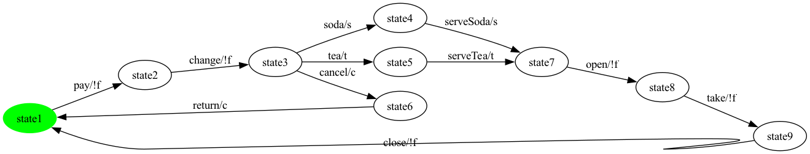
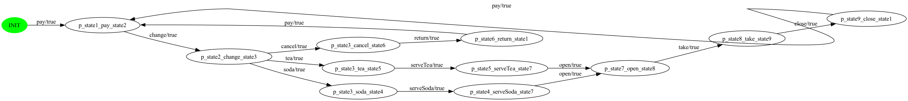
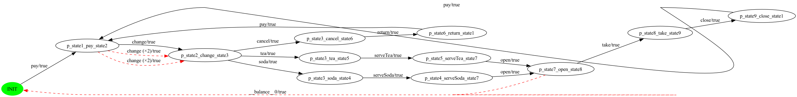
Generated test suite — 3 test case(s) total (16 real step(s); pair-graph cycle has 17 edge(s) total, 3 synthetic dropped at translation).
pay → change → tea → serveTea → open → take → closepaychange → cancel → returnpaychange → soda → serveSoda → openSelected features: selected = {c, t}
Repaired FTS: 8 states, 9 transitions (9 real / 0 __end__).
Pair graph (raw): 10 nodes (incl. INIT), 11 edges.
Pair graph (balanced): 10 nodes, 13 edges (2 synthetic __balance__N added).

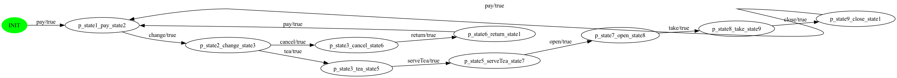
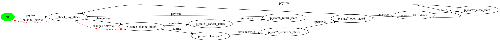
Generated test suite — 2 test case(s) total (12 real step(s); pair-graph cycle has 13 edge(s) total, 2 synthetic dropped at translation).
pay → change → tea → serveTea → open → take → closepaychange → cancel → returnpaySelected features: selected = {f, s}
Repaired FTS: 4 states, 4 transitions (4 real / 0 __end__).
Pair graph (raw): 5 nodes (incl. INIT), 5 edges.
Pair graph (balanced): 5 nodes, 6 edges (1 synthetic __balance__N added).

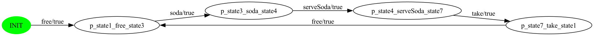
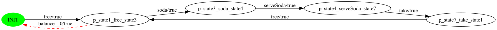
Generated test suite — 1 test case(s) total (5 real step(s); pair-graph cycle has 6 edge(s) total, 1 synthetic dropped at translation).
free → soda → serveSoda → takefreeTotal products: 12.